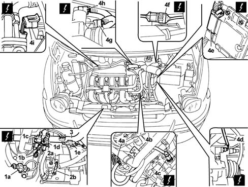

1056B90 system cable bundle - r + r
- Path
- Procedures > 10 ENGINE UNIT > 1056 PETROL INJECTION SYSTEM > 1056B multi-point injection system (mpi) > 1056B90 system cable bundle - r + r
- Kind
- repair procedure (removal / refitting; the operation number is the code)
- Applies to
- engines: 1.6 16v; all production periods
- Interactive page
- https://sloeber94.github.io/elrnDB-fMltpl/en/#/2891270
Applies to: engines: 1.6 16v; all production periods
 Removing
Removing
 Refitting
RefittingPlace the car on a ramp.
Open the bonnet lid.
With the ignition key in the OFF position, disconnect the battery negative terminal.
1088E10 radiator cooling fan - r + r
Raise the car.
1. Disconnect the electrical connections (1a), (1b), (1c), (1d) and (1e).
 | Name | Connector |
|---|---|---|
1a | Detonation sensor |
| Name | Connector |
|---|---|---|
1b | Brake fluid level sensor (switch) |
| Name | Connector |
|---|---|---|
1c | Timing sensor |
| Name | Connector |
|---|---|---|
1d | RPM sensor |
| Name | Connector |
|---|---|---|
1e | Alternator |
2. Undo nut (2a) and disconnect the earth cable from starter motor (2b).
3. Open the wiring channel and take out the injection system wiring.
4. Disconnect electrical connections (4a), (4b), (4c), (4d), (4e), (4f), (4g), (4h) and (4i).
| Name | Connector |
|---|---|---|
4a | Injector |
| Name | Connector |
|---|---|---|
4b | Ignition coil |
| Name | Connector |
|---|---|---|
4c | Engine coolant temperature sensor |
| Name | Connector |
|---|---|---|
4d | Speedometer sensor |
| Name | Connector |
|---|---|---|
4e | Engine management ECU |
| Name | Connector |
|---|---|---|
4f | Front/engine junction |
| Name | Connector |
|---|---|---|
4g | Throttle position sensor |
| Name | Connector |
|---|---|---|
4h | Idle actuator |
| Name | Connector |
|---|---|---|
4i | Integrated air temperature sensor |
5. Release the wiring from the retaining collars and remove it.

Applies to: engines: 1.6 16v; all production periods
Refitting
RemovingPosition the engine wiring in the engine bay.
Connect the electrical connections.
| Name | Connector |
|---|---|---|
- | Integrated air temperature sensor |
| Name | Connector |
|---|---|---|
- | Idle actuator |
| Name | Connector |
|---|---|---|
- | Throttle position sensor |
| Name | Connector |
|---|---|---|
- | Front/engine junction |
| Name | Connector |
|---|---|---|
- | Engine management ECU |
| Name | Connector |
|---|---|---|
- | Speedometer sensor |
| Name | Connector |
|---|---|---|
- | Engine coolant temperature sensor |
| Name | Connector |
|---|---|---|
- | Ignition coil |
| Name | Connector |
|---|---|---|
- | Injector |
Close the wiring channel after arranging the injection system wiring.
Connect the earth lead to the starter motor.
Connect the electrical connections to the front part of the engine.
| Name | Connector |
|---|---|---|
- | Detonation sensor |
| Name | Connector |
|---|---|---|
- | Brake fluid level sensor (switch) |
| Name | Connector |
|---|---|---|
- | Timing sensor |
| Name | Connector |
|---|---|---|
- | RPM sensor |
| Name | Connector |
|---|---|---|
- | Alternator |
Lower the vehicle.
1088E10 radiator cooling fan - r + r
With the ignition key in stop position, connect the battery negative terminal.
Close the bonnet lid.
Remove the vehicle from the ramp.
Topics linked from this page (16)
- 1088E10 radiator cooling fan - r + r
- A10 Alternator
- A30 Ignition coil
- D4 Front/engine junction
- K30 Brake fluid level sensor (switch)
- K43 Integrated air temperature sensor
- K45 Engine coolant temperature sensor
- K46 RPM sensor
- K47 Timing sensor
- K50 Detonation sensor
- K56 Throttle position sensor
- K84 Speedometer sensor
- M10 Engine management ECU
- M010A Engine management ECU ( ENGINE )
- N70 Injector
- N74 Idle actuator